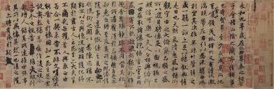
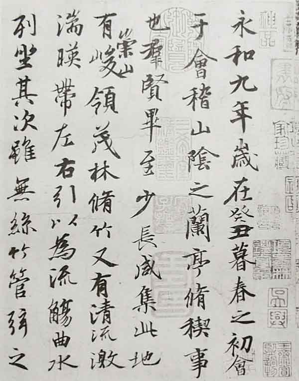

История и философия
Китайская каллиграфия — это не просто письмо, а высшая форма искусства, сочетающая технику, эстетику и духовность. На протяжении более 3000 лет каллиграфия считалась способом выражения внутреннего мира художника.
📜 Четыре сокровища кабинета
Кисть, тушь, тушечница и бумага — основные инструменты каллиграфа
🎯 Пять стилей письма
От архаичного Чжуаньшу до беглого Цаошу
🧘 Духовная практика
Каллиграфия как медитация и путь самосовершенствования
Известные каллиграфы
- Ван Сичжи (303-361) - "Святой каллиграф"
- Ян Чжэньцин (709-785) - Мастер стандартного стиля
- Су Ши (1037-1101) - Поэт и каллиграф
Шедевры каллиграфии

"Предисловие к Павильону Орхидей"
